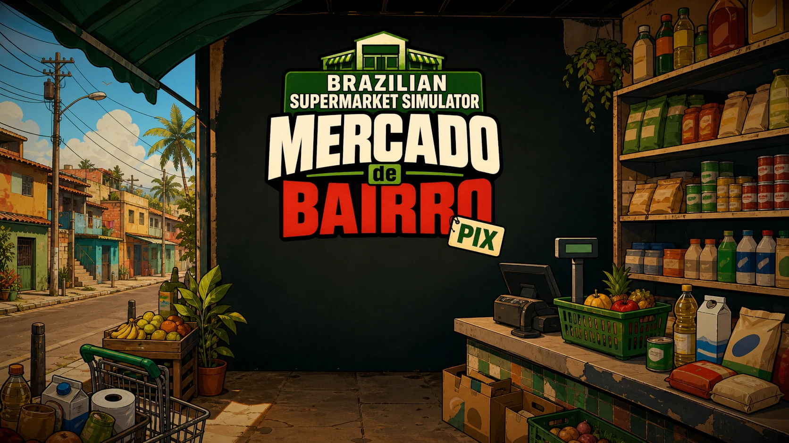

Game Developer
João Ricardo
Game Developer | Gameplay Systems | Unity/C#
Crio jogos e protótipos com foco em gameplay, sistemas e experiências jogáveis com visão de produto.
Gameplay Programming
Gameplay Systems
Product Thinking for Games

Ver devlog no hover
Projeto principal
Mercado de Bairro
Brazilian Supermarket Simulator
Gerencie um mercadinho brasileiro em primeira pessoa. Pão quentinho, fiado só amanhã.
Projetos selecionados
Projetos selecionados
Gameplay, protótipos e experiências jogáveis em Unity/C#.
Experiência aplicada a jogos
Trajetória com foco em games
Uma linha curta sobre como projetos, serious games e mentoria reforçam a entrega de sistemas jogáveis.
Blog
Blog
Textos, estudos e bastidores sobre Unity, gameplay systems, produção indie e desenvolvimento de jogos.